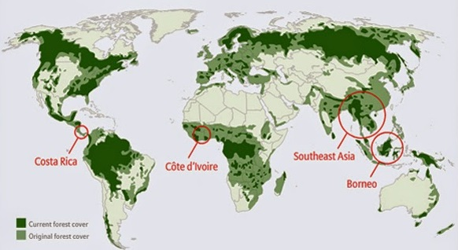

Deforestation and Desertification


Deforestation and Desertification
Every year, deforestation removes 18 million acres of forests.
That's the equivalent of West Virginia disappearing off the face of the earth every year.
Every year, desertification removes 12 million hectares of fertile land.
To put that into perspective, image the entire state of Pennsylvania becoming a desert over the course of a year.
Why does this matter?
How desertification affects us in the USA:
It is estimated 15 percent of the U.S. food supply is imported, including 50 percent of fresh fruits, 20 percent of fresh vegetables. Should countries we import food from start having major problems with desertification, we may see an increase in the price of food, or even a decrease in what's available seasonally.
Desertification may also cause a migrant crisis in the future. Up to 319 million hectares, an area 1/3 the size of the entire USA, are seriously at risk in Africa.
How deforestation affects us in the USA:
Deforestation contributes to desertification by disturing the water cycle, leading to areas slowly becoming barren. Forest soils can quickly dry out if trees covering them from the sun are removed. They can also lead to extreme temperature swings, changing th habitats of local wildlife.
Why you should care:
Deforestation in New England has reduced predation and destroyed habitats for animals like deers. With a larger amount of animals in a smaller space, the frequency of infection with diseases such as Lyme increases. From there, we will probably see an increase in Lyme disease spread by tick bites.
Deforestation accounts about 25% of carbon dioxide in the air. As a result of increasing deforestation, global warming is causing the average temperature to rise in many places. A couple of the hottest summers on record have occured only in the last decade.
How to help:
Donate and learn more here.